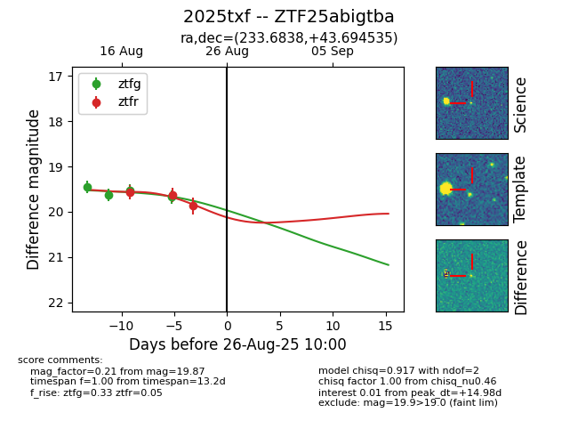

Target 2025txf at 2025-08-26 10:00, see:
FINK: fink-portal.org/ZTF25abigtba
Lasair: lasair-ztf.lsst.ac.uk/objects/ZTF25abigtba
ALeRCE: alerce.online/object/ZTF25abigtba
TNS: wis-tns.org/object/2025txf
YSE: ziggy.ucolick.org/yse/transient_detail/2025txf
alt names
ZTF25abigtba (ztf,fink)
2025txf (tns,yse)
coordinates:
equatorial (ra, dec) = (233.6838,+43.69454)
galactic (l, b) = (70.6324,+53.31580)
photometry
last ztfg=19.67, ztfr=19.87
4 ztfg, 3 ztfr detections
